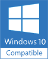
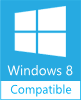
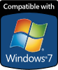

You may try the evaluation version of WYSIWYG Web Builder free of charge for a period of 30 days.
After the 30-day evaluation period, a license fee is required for continued use and use of extensions.
Please read the End User License Agreement before downloading and installing the software.
https://www.wysiwygwebbuilder.tk/eula.html
Download the latest version of WYSIWYG Web Builder 15.4.5 (build date: August 27, 2020)
WYSIWYG Web Builder 15.4.5 (32-bit version)
WYSIWYG Web Builder 15.4.5 (64-bit version)
After the 30-day evaluation period, a license fee is required for continued use and use of extensions.
Please read the End User License Agreement before downloading and installing the software.
https://www.wysiwygwebbuilder.tk/eula.html
Download the latest version of WYSIWYG Web Builder 15.4.5 (build date: August 27, 2020)
WYSIWYG Web Builder 15.4.5 (32-bit version)
WYSIWYG Web Builder 15.4.5 (64-bit version)
Download
Alternative download locations:

Language modules for WYSIWYG Web Builder 15
For other languages please visit the Language Modules page.
Free extras / addons / plugins for WYSIWYG Web Builder
Lots of free extras and addons can be found here: Free Extras
Other versions
WYSIWYG Web Builder 14.4
WYSIWYG Web Builder 12.5.2 (this version is no longer supported)
WYSIWYG Web Builder 11.6.5 (this version is no longer supported)
Looking for Mac or Linux Web Design software?
Quick 'n Easy Web Builder was designed for Mac OSX and Linux: http://www.quickandeasywebbuilder.com/
Note that this is a different product!
For other languages please visit the Language Modules page.
Free extras / addons / plugins for WYSIWYG Web Builder
Lots of free extras and addons can be found here: Free Extras
Other versions
WYSIWYG Web Builder 14.4
WYSIWYG Web Builder 12.5.2 (this version is no longer supported)
WYSIWYG Web Builder 11.6.5 (this version is no longer supported)
Looking for Mac or Linux Web Design software?
Quick 'n Easy Web Builder was designed for Mac OSX and Linux: http://www.quickandeasywebbuilder.com/
Note that this is a different product!


Are you upgrading from a previous version?
For more details about upgrading from WYSIWYG Web Builder 14 or older versions please read:
WYSIWYG Web Builder 15 Upgrade FAQ
For more details about upgrading from WYSIWYG Web Builder 14 or older versions please read:
WYSIWYG Web Builder 15 Upgrade FAQ
Note: for Windows 7 you may need to install DIrect2D support.
See the FAQ
See the FAQ